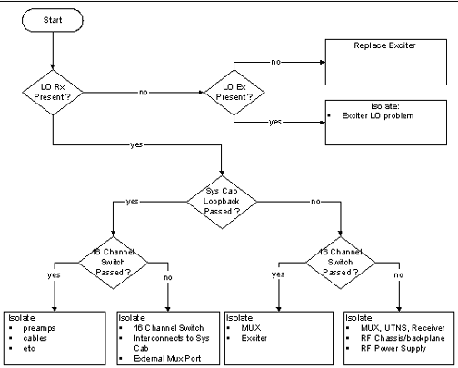

Proprietary to General Electric Company
Direction 5440000, Rev# 5
Signa HDxt Service Methods
Module Version 1.0, Version Date 4/26/07
Proprietary to General Electric Company |
Diagnostics >> RRF Chassis >> RF Receive Chain Isolation Diagnostic
The purpose of the RF Receive Chain FRU Isolation Diagnostic is to isolate signal problems with analog portion of the receive path that includes the 16-channel Switch, receive chain boards (Mux, UTNS, Receiver), Exciter as it pertains to the receive chain, and associated cabling.
Run the RRF Board Level Diagnostics first. Troubleshoot any failures before running the RF Receive Chain FRU Isolation diagnostic.
This diagnostic is ideally suited for isolating low signal conditions to a failed FRU. This diagnostic addresses the failure by analyzing the test results and then prompting the FE to make changes and run new tests based on the previous results. Each step indicates how to make the corresponding modifications and run the test.
16-channel Switch
Cabling between the 16-channel Switch and the Mux Board(s)
Receive Chain (Mux, UTNS, Rx)
Exciter as it pertains to the Receive Chain
Performed and passed the following tests:
RRF BLDs
RRF Data path
Various FE tools & cable kits that will be specified as needed.
Once you have run and passed the required tests, click [Run] to open the next part of the RF Receive Chain Isolation Diagnostic.
The diagnostic starts with a flowchart used to relay the diagnostic's specific purpose – to isolate problems in the RRF Chassis and from the 16-channel Switch. This diagnostic isolates the FRU by going verifying several aspects of the system in the following order:
ensures LO from the exciter board is correct;
runs the System Cabinet Loopback Diagnostic;
runs the 16-channel Switch’s Output Oscillator diagnostic.
Illustration 1: Diagnostic Flowchart

To begin diagnostics click [Run Diagnostics].
Once “Running multiple tests...complete” is displayed in Test Results, click [Next Step]. This will open a page that will direct you to the failed FRU, sometimes by going through a multi-step process detailing which actions to take.
Based on those results, the next course of action is taken. See Illustration 1 and then proceed as instructed.
The diagnostic will lead the FE to a failed FRU.
None
None